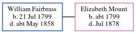

William Fairbrass 1799 - c1858
[ Home ] | [ Calendar ] | [ Surnames Index ] | [ Errors ] | [ Family History ]William Fairbrass, the husband of Elizabeth Mount (the four times great-aunt of Nigel Horne), was born in Ickham, Kent, England on 21 Jul 17991,2. He married Elizabeth in Sturry, Kent, England on 22 Aug 1819.
During his life, he was living at Bekesbourne Hill, Bekesbourne, Kent on 6 Jun 18416; and in Bekesbourne, Kent, England on 30 Mar 18512.
He died c. May 1858 in Bridge, Kent, England3,4 and was buried at St Peter in Bekesbourne on 2 May 18585.
Citations
- 1841 England Census Online publication - Provo, UT, USA: The Generations Network, Inc., 2006.Original data - Census Returns of England and Wales, 1841. Kew, Surrey, England: The National Archives of the UK (TNA): Public Record Office (PRO), 1841. Data imaged from the National
- 1851 England Census Online publication - Provo, UT, USA: The Generations Network, Inc., 2005.Original data - Census Returns of England and Wales, 1851. Kew, Surrey, England: The National Archives of the UK (TNA): Public Record Office (PRO), 1851. Data imaged from the National (Age: 54; Relation: Head)
- England & Wales deaths 1837-2007 - Findmypast
- England & Wales, FreeBMD Death Index: 1837-1915 Online publication - Provo, UT, USA: The Generations Network, Inc., 2006.Original data - General Register Office. England and Wales Civil Registration Indexes. London, England: General Register Office. © Crown copyright. Published by permission of the Cont
- Kent, Canterbury Archdeaconry burials 1538-1988 - Findmypast
- 1841 England, Wales & Scotland Census - Findmypast (was age 45)
- 1851 England, Wales & Scotland Census - Findmypast (was age 54 and the head of the household)
Media
1851 England, Wales & Scotland Census Transcription - GBC-1851-0005791027
Canterbury Burials Transcription - GBPRS-CANT-D-95472443
1841 England, Wales & Scotland Census - GBC/1841/0013913616
Family Tree
Map
Generated by ged2site. Last updated on Jul 3, 2024
Known Issues
Marriage date (22 Aug 1819) has no citations
Mar 30, 1851: not living at same address as spouse Elizabeth Mount ('Bekesbourne, Kent, England'/'Bekesbourne Hill, Bekesbourne, Kent, England')